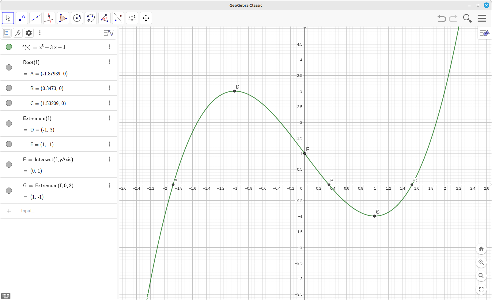
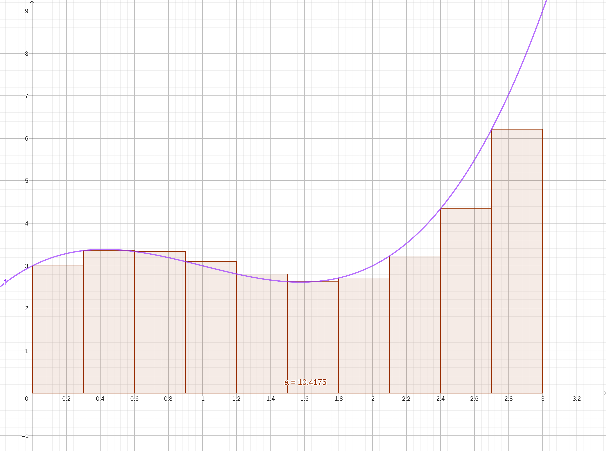
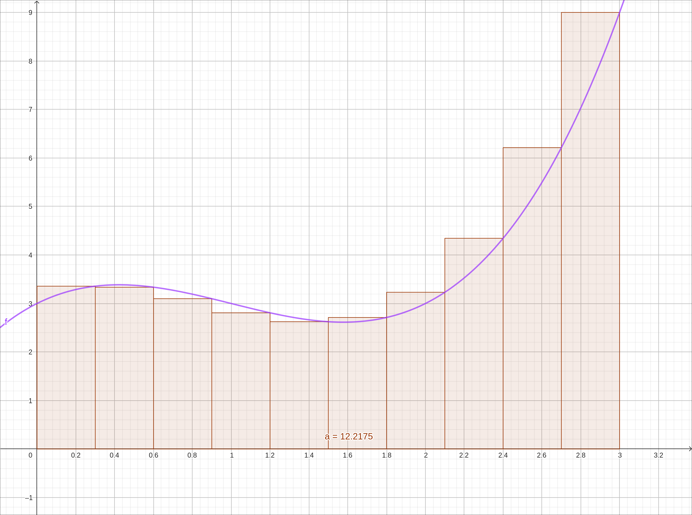
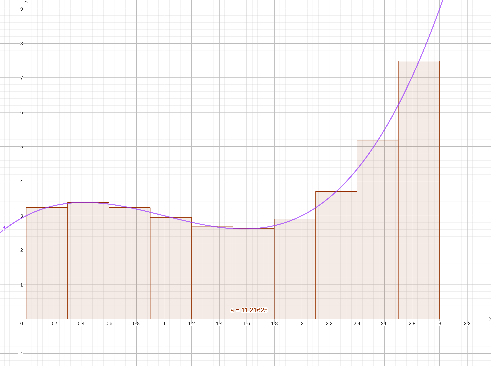
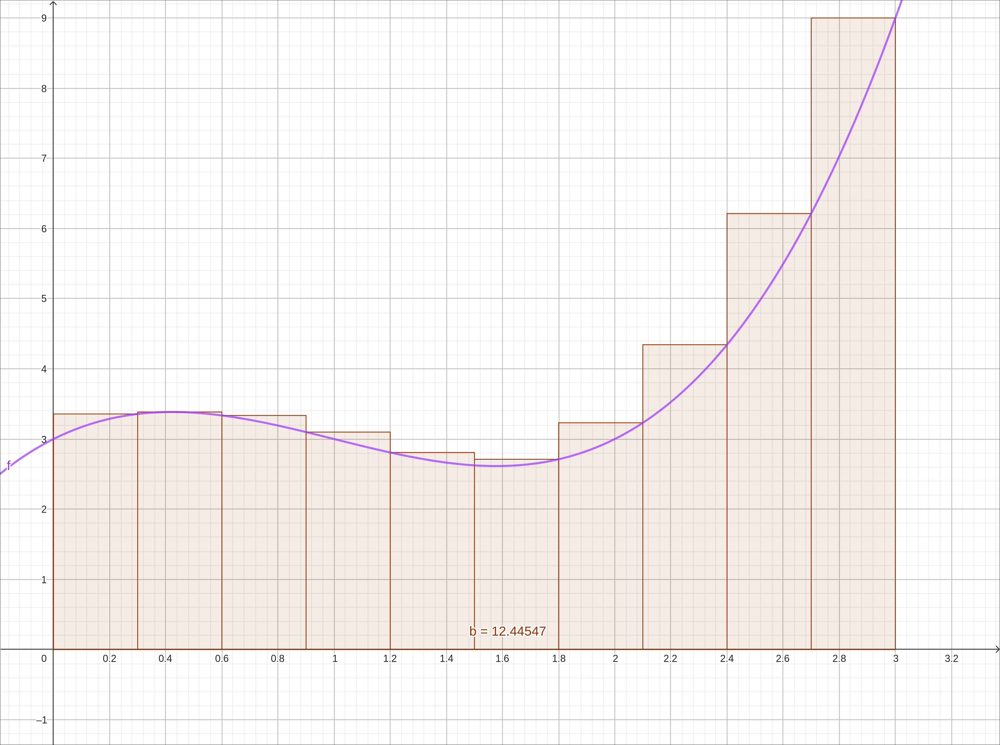
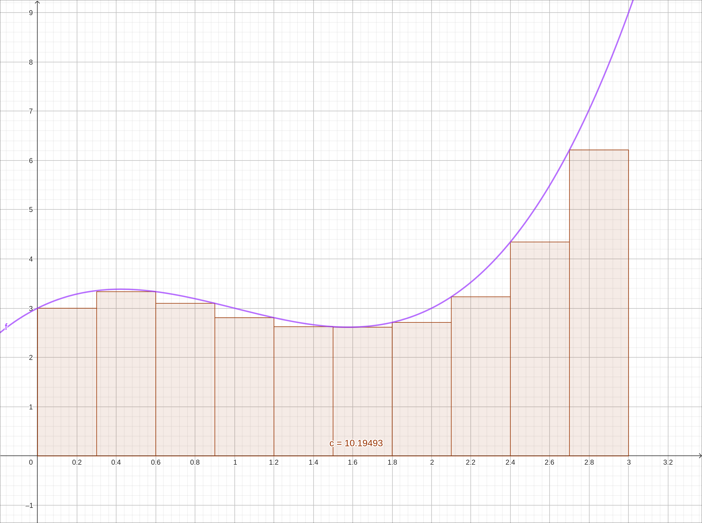
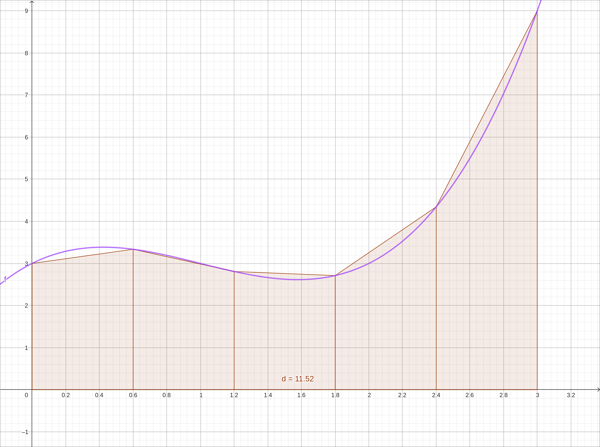

Calculus and Support Functions#
Solving Equations#
There are a number of solving commands in GeoGebra, some return exact solutions when they can and others will return approximate solutions. We will discuss a few of them here.
Solve#
The Solve command will find a list of solutions to an equation or expression in exact form if possible. It will revert to numeric solutions if it needs to. With the output there will be a (\(=\)/\(\approx\)) toggle button to toggle between exact and numeric formats, that is, between Solve and NSolve. With this command the solutions are given in equation form.
For example, if you input \(x^{2} + x - 3\) and then do the Solve command the result will be
there is also a (\(=\)/\(\approx\)) toggle button
As another example, if you input \(x^{3} - 4 x + 2\) and then do the Solve command the result will be
NSolve#
The NSolve command will find a list of numeric approximations to the solutions to an equation or expression. With the output there will be a (\(=\)/\(\approx\)) toggle button to toggle between exact and numeric formats, that is, between Solve and NSolve. With this command the solutions are given in equation form.
For example, if you input \(x^{2} + x - 3\) and then do the NSolve command the result will be
there is also a (\(=\)/\(\approx\)) toggle button
As another example, if you input \(x^{3} - 4 x + 2\) and then do the NSolve command the result will be
Solutions#
The Solutions command will find a list of numeric approximations to the solutions to an equation or expression. With this command the solutions are given in list form.
For example, if you input \(x^{2} + x - 3\) and then do the Solutions command the result will be
As another example, if you input \(x^{3} - 4 x + 2\) and then do the Solutions command the result will be
NSolutions#
The NSolutions command will find a list of numeric approximations to the solutions to an equation or expression. With this command the solutions are given in list form.
For example, if you input \(x^{2} + x - 3\) and then do the NSolutions command the result will be
As another example, if you input \(x^{3} - 4 x + 2\) and then do the NSolutions command the result will be
Roots#
The Roots command attempts to find all the roots of a function within a lower and upper bound. The results are in approximate form as points that are plotted on the graphics screen. The syntax is Roots(f, lb, ub) where f is the function, lb is the lower bound, and ub is the upper bound. You can also skip the lower and upper bounds Roots(f) and it will use the visible x-axis range for the bounds.
Root#
The Root function has three forms,
Root(poly): This will take a polynomial as input and find its approximate roots plotted as points.Root(fct, initial): This will take a function and an initial guess to the root as input and find an approximate roots close to the initial point, the result is a point that will be plotted.Root(fct, lb, ub): This will take a function, a lower bound, and an upper bound as input and find the root that is in the interval [lb, ub], the result is a point that will be plotted.
Simplify#
To simplify an expression use the Simplify command, just input Simplify(fct) and the function will be simplified.
Rational Expressions#
To extract the numerator of a rational expression use the Numerator command, just input Numerator(fct) and the numerator will be extracted.
To extract the denominator of a rational expression use the Denominator command, just input Denominator(fct) and the denominator will be extracted.
Complex Numbers#
GeoGebra supports complex numbers. To input a complex number simply use i for the imaginary unit, for example, 3 + 4 i. Some functions for complex numbers are as follows, assume that a = 3 + 4 i
conjugate(a)returns the conjugate of the complex number, \(3-4i\).real(a)returns the real part of the complex number, \(3\).imaginary(a)returns the real part of the complex number, \(4\).abs(a)or|a|returns the modulus of the complex number, \(5\).
Limits#
There are three limit commands in GeoGebra, Limit, LimitAbove, and LimitBelow.
The two-sided limit command is Limit, it takes in a function and limit point and returns the two-sided limit. For example, input,
sin(x)/x
Then
Limit(f, 0)
and it returns,
The one-sided limit commands are LimitAbove and LimitBelow. LimitAbove is the limit from the right and LimitBelow is the limit from the left. As with the two-sided limit they take in a function and limit point and return the one-sided limit. For example, input,
sin(x)/x
Then
LimitAbove(f, 0)
and it returns,
and
LimitBelow(f, 0)
and it returns,
For infinite limits just use the Limit command and either inf or infinity for \(\infty\) and either -inf or -infinity for \(-\infty\).
For example, input,
sin(x)/x
Limit(f, inf)
Limit(f, infinity)
and it returns,
Derivatives#
There are a number of ways to do derivatives in GeoGebra.
Using Prime Notation#
If you have a function of a single variable you can simply use prime notation. For example, if f is a function of one variable then f' is the first derivative, f'' is the second derivative, f''' is the third derivative, and so on.
Using the Derivative Command#
GeoGebra has a Derivative command that takes several forms,
Derivative(fct)takes the first derivative of the function. The function must be in a single variable.Derivative(fct, n)takes the nth derivative of the function. The function must be in a single variable.Derivative(fct, var)takes the first partial derivative of the function with respect to the variable. The function can be either in a single variable or multiple variables.Derivative(fct, var, n)takes the nth partial derivative of the function with respect to the variable. The function can be either in a single variable or multiple variables.
Implicit Differentiation#
If you have a function of two variables, x and y, the ImplicitDerivative command will find \(\frac{dy}{dx}\). The syntax is just ImplicitDerivative(fct) where the function is in two variables, x and y.
Special Points#
In the menu for an item there is an option of Special Points. Selecting this will run functions on the curve to find the local extremes, roots, and the y-intercept. For example,

Special Points Example#
Local Extremes#
GeoGebra can find the local maximums and minimums of a function automatically. One way is to use the Special Points option above. The other is to run the Extremum function. The Extremum function has two forms,
Extremum(poly): where poly is a polynomial, will return the local extremes as points on the curve.Extremum(fct, lb, ub): will return the local extreme of the function in the interval [lb, ub] as a point on the curve.
Integrals#
Area Approximations#
GeoGebra has two very nice commands for visualizing area approximations, several are for Riemann Sums and there is one for the Trapezoidal Rule.
RectangleSum#
The RectangleSum command has the form RectangleSum(fct, start, end, n, pos) where fct is the function, start is the beginning of the interval that you are approximating over, end is the ending of the interval that you are approximating over, n is the number of rectangles to use, and pos is the position of the test point to use for each subinterval. A pos of 0 would be the left hand endpoint, 1 is the right hand endpoint, 0.5 would be the midpoint. The value of pos can be any number in \([0, 1]\).
For example, with the function \(f(x) = x^{3} - 3 x^{2} + 2 x + 3\), using 10 rectangles, and a pos of 0.

RectangleSum Example#
Changing this to a pos of 1,

RectangleSum Example#
and a pos of 0.5,

RectangleSum Example#
UpperSum and LowerSum#
GeoGebra also has a command to calculate and visualize upper and lower sums. They both have the same syntax, UpperSum(fct, start, end, n) and LowerSum(fct, start, end, n), where fct is the function, start is the beginning of the interval that you are approximating over, end is the ending of the interval that you are approximating over, and n is the number of rectangles to use.
For example, with the function \(f(x) = x^{3} - 3 x^{2} + 2 x + 3\), using 10 rectangles, the upper and lower sums are,

UpperSum Example#

LowerSum Example#
TrapezoidalSum#
GeoGebra also has a command to calculate and visualize the Trapezoidal Rule. The syntax is the same as the upper and lower sums, TrapezoidalSum(fct, start, end, n), where fct is the function, start is the beginning of the interval that you are approximating over, end is the ending of the interval that you are approximating over, and n is the number of trapezoids to use.
For example, with the function \(f(x) = x^{3} - 3 x^{2} + 2 x + 3\), using 5 trapezoids,

TrapezoidalSum Example#
Definite and Indefinite Integrals#
GeoGebra has functions to find both indefinite and definite integrals. Indefinite integrals return an integral function and the definite integrals usually return an approximation. The Integral command that takes several forms,
Integral(fct)takes the indefinite integral of the function. The function must be in a single variable.Integral(fct, var)takes the indefinite integral of the function with respect to the variable. The function can be either in a single variable or multiple variables.Integral(fct, start, end)takes the definite integral of the function from the start to the end. The function must be in a single variable.
Ordinary Differential Equations#
GeoGebra has functions for solving differential equations and initial-value problems of the form \(y' = f(x, y)\). Higher-order differential equations and those involving more difficult expressions need other computer algebra systems.
Exact Solutions#
The function for these is SolveODE, which comes in several forms.
SolveODE(f(x, y))solves a differential equation exactly and returns the general solution with constants implemented as sliders.SolveODE(f(x, y), (a, b))solves the initial-value problem \(y' = f(x, y)\) and \(y(a) = b\). Note that the point \((a, b)\) can be a geometric point that is on the plot.
For example, let’s solve the differential equation, \(y' = 2 x y \left(2 y + 1\right)\). Input the right hand side,
2 x y (2 y + 1)
Assuming this came in as a(x, y) in a new cell input
SolveODE(a)
and it returns the result along with a slider for the constant. If we check this by, assuming that the solution equation is g,
g' - a(x,g)
we see that the expression is not 0 as expected but if we look over to the graph the plot is the x-axis, telling us that the solution does check but the expression did not simplify to 0. If we further did the command Simplify(h) (assuming the last expression was h) it does return 0.
Numerical Methods#
GeoGebra can produce slope fields (direction fields) as well as Euler’s method curves.
SlopeField(f(x, y))orSlopeField(f(x))will produce a slope field (direction field) of the function.SolveODE(f(x, y), start-x, start-y, end-x, step size)produces an Euler’s method curve starting at the point (start-x, start-y) moving until end-x using the step size as an increment. Note that you can link the curve up to an initial point in order to animate it. If the point is A thenSolveODE(f(x, y), x(A), y(A), x(A) + length, step size)will start the curve at the point A.
Sequences#
To create a sequence of points when studying sequences do the following,
Input the expression for the nth term, using x as the index variable, assume this is
f(x).Create a sequence (list) of x-values
Sequence(start index, end index)for exampleSequence(1, 100). Assume this comes in as the listl1.Evaluate the function at the list with
f(l1), this will create a list l2 of corresponding y values.Finally input (l1, l2) and this will create a set of points representing the sequence.
Power Series and Taylor Series#
GeoGebra can create a finite portion of a power series and of a Taylor series (a Taylor polynomial). For power series simply use the Sum command and for Taylor polynomials use the TaylorPolynomial command.
Sum(fct(n),n,start n,end n)wherefct(n)is the expression for the nth term. For example,Sum(x^n,n,0,10)produces \(x^{10} + x^{9} + x^{8} + x^{7} + x^{6} + x^{5} + x^{4} + x^{3} + x^{2} + x + 1.\)TaylorPolynomial(f(x), point, degree)wheref(x)is the function, point is the expansion (center) point, and degree is the degree (or order) of the polynomial.
Parametric Equations#
Parametric equations can be input in two ways, either as an ordered pair of expressions or with the Curve command.
(x function, y function), with this style of input the GeoGebra will select the parameter and the bounds on the parameter automatically.Curve(x(t), y(t), parameter variable, lower bound, upper bound),x(t), andy(t)are the defining expressions, theparameter variableis the variable for parameter value inputs, thelower boundis the beginning value for the parameter, and theupper boundending value for the parameter.
Polar Coordinate Plots#
In GeoGebra, you can plot a point or a curve in polar coordinates by using a semicolon in place of a comma, specifically use the syntax (r; theta). For example, the inputs (3; pi/6), (1; pi), and (2; 5 pi/3) will plot three points using polar coordinates. To plot a polar coordinate curve we use the parametric equation format, again using a semicolon in place of a comma. Specifically, expressions of the form (f(t); t), (r; f(r)), and (f(t); g(t)).